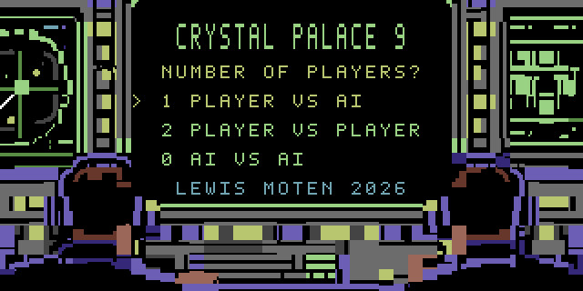
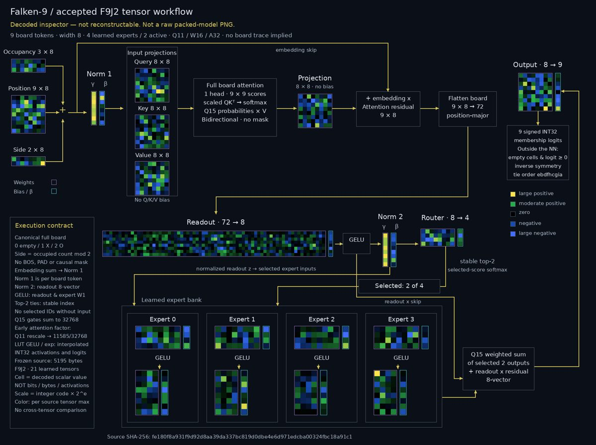

Falken-9: a whole AI-vs-AI game in just over a minute


Crystal Palace 9, my Commodore 64 tic-tac-toe game, now runs on Falken-9, a new model I trained for the C64's arithmetic and memory from the start. The whole 5,195-byte model stays in RAM, so a complete AI-vs-AI game takes just over a minute in an emulator. The earlier model took about 20 minutes.
The second picture is the tensor workflow: every decoded weight, from the board embeddings through attention, the router and the four experts. The research report probes the network with interventions and charts what it found.